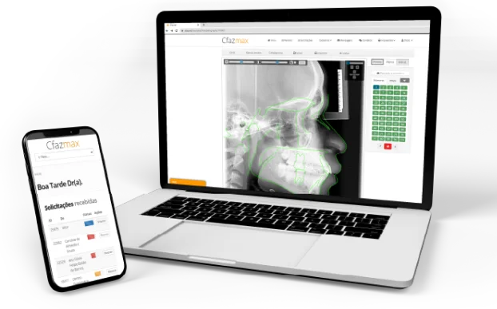
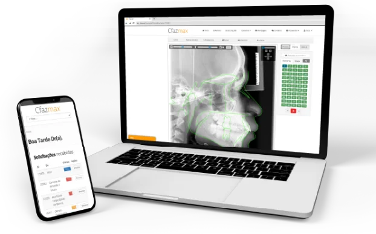

Soluções inteligentes em Nuvem
para a gestão eficaz e humanizada
de Centros Odontológicos e Médicos.
Cfaz.net é o primeiro sistema 100% online para profissionais e centros
de Diagnóstico por Imagem.
 

Sobre nós
A Cfaz nasceu há anos em Belo Horizonte, Minas Gerais. Desenvolvemos o Cfaz.net, primeiro sistema nativo em nuvem e 100% online para Centros de Diagnóstico por Imagem. Após o reconhecimento pelo SEED MG e pelo FIEMG Lab como uma das empresas mais inovadoras do mercado. Hoje atendemos a profissionais e centros Radiológicos em todo o Brasil e na América Latina.
Conheça as nossas
soluções para a saúde
Gestão eficiente de ponta a ponta para facilitar, automatizar e agilizar a entrega de resultados.
O que os nossos clientes estão falando

Dra. Patrícia Fernandes Avila
Diretora da Clínica Precisão
Escolhi o Cfaz.net como o software de gestão da minha clínica devido a sua praticidade, clareza e seu bom atendimento, que é sempre impecável. Como resultado dessa parceria, obtive maior rapidez nos processos e o que mais gosto no sistema é a sua facilidade no manejo e agilidade, a possibilidade de integração com os equipamentos e envio automático para o dentista.
Fale com um de nossos consultores
Saiba quais vantagens o Cfaz.net oferece em relação a outros sistemas quanto a economia de tempo, redução de custos e aumento da produtividade e do faturamento.

SEGURANÇA DOS DADOS
Nossos clientes se beneficiam com a segurança e a robustez da mesma infraestrutura de nuvem utilizada pela Google em serviços como seu Buscador, Gmail e Youtube.
ARMAZENAMENTO POR PELO MENOS 20 ANOS*
Atendendo as normas de todos conselhos de saúde: CFO, CFM e ANVISA.
*Válido durante a vigência do contrato
ADEQUAÇÃO À LGPD
Adotamos os mais avançados protocolos de segurança para garantir a integridade e a inviolabilidade dos dados dos pacientes, além de nos comprometermos a não utilizar ou compartilhar os dados sem seu consentimento.
Leve a transformação digital para o seu negócio
O CFAZ.NET NASCEU COMO O 1º SISTEMA 100% ONLINE PARA A RADIOLOGIA
A experiência é simplificada desde o início, garantindo mais agilidade e eficiência para a realização de exames e para a gestão da clínica ou centro médico.

PACS ONLINE
Integração DICOM com todos aparelhos do mercado e armazenamento 100% seguro na Nuvem, graças à infraestrutura fornecida pela Google Cloud Platform.

RIS ONLINE
Agendamentos, PEP (Prontuário Eletrônico do Paciente), Integração com qualquer equipamento que utilize o protocolo DICOM (PACS/Worklist), Gestão Financeira, Controle de Convênios e Glosas, tudo pode ser acessado de qualquer lugar pelos administradores da clínica.
MÁXIMA QUALIDADE DA IMAGEM
Somos o único sistema de gestão para Radiologia que oferece armazenamento de imagens e exames com 100% da qualidade original.
DICOM
Suporte nativo a Worklist e PACS, permitindo integração com qualquer aparelho. Além disso, o DICOM Printer gratuito permite a integração com todos os tipos de impressoras DRY.
STL
Suporte completo para modelos digitais: armazenamento, visualização e distribuição.
GESTÃO UNIFICADA DE REDES DE CLÍNICAS
Administre toda a rede de clínicas ou centros médicos em um único sistema, visualizando indicadores de toda a rede ou de cada centro separadamente.
Inteligência Artificial e Tecnologias desenvolvidas por nossos engenheiros
A Inteligência Artificial da Cfaz está presente em nossa ferramenta de Traçados Cefalométricos - para a Radiologia Odontológica - e na Identificação Automática de Imagens para montagem de templates. O Radiologista reduz o tempo gasto para realizar um traçado, economiza recursos e pode focar no que realmente importa: a saúde do paciente e o desenvolvimento do seu negócio.

Tomografia
Armazenamento e distribuição de tomografias 100% online. Com o Cfaz.net o solicitante pode visualizar as tomografias diretamente na plataforma online, sem a necessidade de instalação de nenhum software ou de baixar o arquivo na própria maquina.
O DicomViewer desenvolvido pela nossa equipe de engenharia permite visualizar a reconstrução volumétrica MPR (Multiplanar Reconstruction) da tomografia. Oferece também ferramentas para manipulação do volume, permitindo mudar os eixos de visualização dos cortes, além de aplicar filtros e realizar medidas.

Conectamos sua clínica a profissionais de todo o Brasil e do exterior participando gratuitamente do nosso marketplace
CfazBusiness
Marketplace exclusivo para terceirização de laudos, conectando Radiologistas a Centros Médicos de todo o Brasil e América Latina.
CfazJob
Solução específica para criação de laudos e terceirização, através do marketplace CfazBusiness.
Saiba mais sobre nossas soluções para a Telerradiologia
AppCfaz
Portal gratuito de imagens e exames para seus solicitantes e pacientes, disponível em um Aplicativo Mobile, com histórico completo de pacientes e acesso online via smartphone, tablet, além do computador.
Saiba como participar do único Programa de Benefícios que oferece desconto em cursos,
livros, proteção radiológica, seguro e equipamentos
para a saúde.


Mi
de papéis economizados
K
árvores preservadas